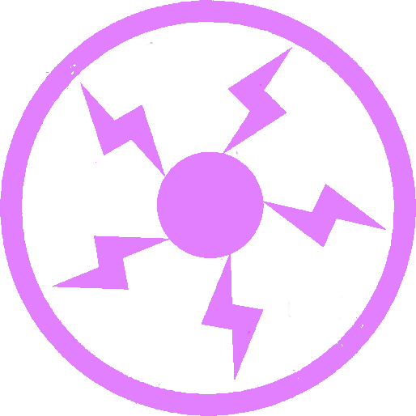
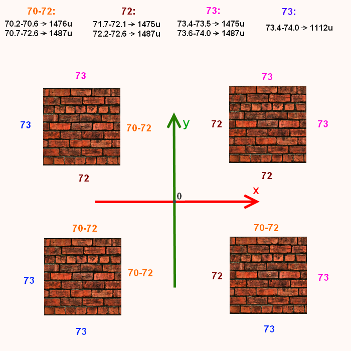

Вообще плазмаган - одна из сложнейших пушек в defrag в плане умения ей пользоваться.
Технические характеристики:
- Пушка - plasmagun; боеприпасы - cells
- Время перезарядки = 100ms (при 8ms физике чередуются значения 104 и 96ms)
- Скорость полёта заряда = 2000ups
- Максимальное поражение противника = 20hp
- Максимальное поражение владельца снаряда = 7hp

На первый взгляд может показаться, что плазма не подходит для трикинга из-за слабого сплеша.
Но ошибкой было бы так думать.
Ведь при слабом сплеше эта пушка чрезвычайно скорострельна.
Педположительно сила сплеша пропорциональна поражению, тогда считаем 800ms*7hp/100ms=56hp - даже больше показателей рокета!
Т.е. у плазмагана выделение той же величины энергии происходит более плавно во времени.
Для некоторых триксов это свойство является недостатком, для некоторых - преимуществом; иногда встречаются триксы, которые вообще невозможно совершить, к примеру, рокетом, но выполняемые при помощи плазмы.
Плазмаджамп (pj).
Принцип точно такой же, как и у рокетджампа, только высота чуть меньше - 78u, скорость, добавляемая по вертикали примерно 74ups.
Это, конечно, немного, но часто бывает нужно сделать pj, к примеру, если вы не допрыгиваете до нужной цели стрейфами.
05-01_q3dm6_some_pjs.dm_68
05-02_q3dm6_over_base_pj.dm_68 - внушает уважение к плазмаджампам=)
Плазмаклаймб (PC).
Вертикальный плазмаклаймб.
Главный и основной трикс с плазмой;
Это возможность подниматься по стенам с помощью плазмы.
Направляем плазмаган под углом к стенке, прижимаемся к ней кнопкой вперёд, нажимаем одновременно прыжок и выстрел, как при рокетджампе; затем прыжок отпускаем - это очень важно, ведь при зажатом прыжке горизонтальная тяга уменьшается, и вы будете слабее прижиматься к стене.
Каждая плазминка добавляет примерно 66ups по вертикали.
Оптимальное значение угла колеблется от 70 до 73 градусов (на глаз - чуть выше стыка пола и стены) - в зависимости от того, как была спроектирована карта. От этого, кстати, зависит не только оптимальный угол, но и максимальная высота, на которую можно подняться на разных стенах.
Суть в том, что игрок обычно имеет отступ от стен, равный 0.125u. Значит, его координата в прижатом к стене состоянии может иметь 125 или 875 после запятой, плюс значение может быть положительным или отрицательным.
А координата снаряда всегда округляется до целого числа.
В результате имеем более и менее выгодные для взбирания с плазмой стены.
По признаку максимально возможной высоты PC типов стен всего два - но один из них имеет три вариации - различается угол, с которым можно её набрать.
На более выгодной стенке можно подняться на высоту 1487u (1517u, если начинать с pj в пол).
На менее - 1112u.
Ситуация выглядит так (вид сверху):
Очевидны закономерности; сформулируем их в виде четырёх тезисов, удобных для применения на практике:
- взгляд при PC направлен от начала координат и вдоль оси, координата по которой отрицательна: 70.2'-72.6'
- взгляд при PC направлен от начала координат и вдоль оси, координата по которой положительна: 71.7'-72.6'
- взгляд направлен к началу координат и вдоль оси, координата по которой положительна: 73.4'-74.0'
- взгляд направлен к началу координат и вдоль оси, координата по которой отрицательна: 73.4'-74.0', высота 1112u
Вне этих диапазонов PC будет заметно хуже.
Но это всё сказано о стенах, расположенных параллельно осям Q3, а ведь есть ещё и расположенные к ним под углом.
Дело в том, что физическая модель игрока представляет собой "кирпич" с основанием 30 на 30 юнитов и высотой в 56 (в присевшем состоянии 40). Так вот, этот кирпич двигается по карте, постоянно находясь параллельно главным осям игры; меняется только направление вашего взгляда внутри него.
Следовательно, если пытаться плазмить по направленной под углом стенке, то игрок будет получать отдачу основанием хитбокса менее эффективно, чем на нормальной стене, и, чем ближе её наклон к 45`, тем сложнее будет подняться по ней с помощью плазмы.
Если уж очень надо залезть по такой стене, то имеет смысл поставить угол наклона плазмагана повыше, т.к. источник плазмин находится дальше от стены. Например для стены, повёрнутой под 45 градусов, оптимальный угол будет приблизительно 67`.
Если на стене есть небольшие впадины, то надо поступать таким же образом - при их достижении ставить угол в более горизонтальное положение.
05-03_q3dm6_pc_with_obstacle.dm_68 хороший тому пример.
Что касается выступов на стенах, то по ним практически невозможно плазмить.
В случае наклонных стен оптимальный угол ниже 72`, т.к. при этом угле взрывы будут происходить выше основания игрока.
Диагональный плазмаклаймб (PC).
По диагонали можно двигаться и при вертикальном PC, например, разогнавшись перед ним или немного нажимая стрейфы во время подъёма.
При диагональном PC двигаться соответствующим образом помогает и сама плазма.
Для этого надо прижиматься к стене кнопками вперёд и стрейф, а взгляд направить не перпендикулярно стенке, а под углом к ней. Этот угол не должен быть более 45 градусов, если вы планируете эффективно набирать высоту (не относится к плазме с ускорителем - haste).
Вертикальный угол выбирается из соображений высоты, на которую вы хотите подняться.
Так же, как и для вертикального PC, оптимальные углы зависят от расположения и ориентации стен, но рассчитать их проблематично, а использовать в игре, оперируя сразу двумя углами, и того сложнее. Хада на эту тему в дефраге также нет.
Так что остаётся расслабиться и получать удовольствие от игры.
Диагональный PC можно начинать прямо с пола, а можно переходить на него из вертикального.
Также есть метод, который даёт выигрыш по скорости по сравнению с описанным выше способом.
Заключается в том, что прижиматься к стене надо одной кнопкой стрейфа, а горизонтальный угол брать больше 45 градусов. В результате эффективно стрейфим во время PC.
Однако, на больших скоростях таким способом передвигаться не получится, хорош он для разгона до 400-450ups.
Хорошо плазмить по стенке, а лучше по двум и более=)
Можно, например, огибать угол с внутренней стороны; для этого, незадолго до достижения стыка стен, поворачиваем мышь на 90` (имеется в виду, что это обычный прямой угол) и продолжаем плазмить уже по другой стороне угла.
Можно переходить не только на соседнюю стенку, а и на противоположную, если таковая достаточно близко расположена; для этого надо повернуться уже на 180` (перед поворотом можно кратковременно нажать клавишу назад, если стенка не очень близко).
А можно огибать углы и с внешней стороны - для этого перед поворотом надо притормозить и двигаться со скоростью в несколько десятков ups; это необходимо, чтобы не вылететь сильно за край угла. При достижении его поворачиваем мышь на 90`, держа кнопку вперёд, и плазмим уже по другой стороне угла.
Иллюстрация различных стилей плазмаклаймба:
- 05-04_q3dm6_base_pc_styles.dm_68 - куча всевозможных триксов с плазмой.
- 05-05_q3t2_multicorner_pc.dm_68 - плазмаклаймб со множеством переходов на соседнюю стену.
- 05-06_pro-q3dm6_hardcore_plasma.dm_68 - огибание угла с внешней стороны.
Плазму можно сочетать и с другими видами оружия (особенно удачно с гранатами).
05-07_q3dm6_combos.dm_68 - пара примеров таких сочетаний.
Достаточно редкий вид триксов с плазмой - мультиплазмаджампы.
Если есть возможность набрать 2000ups, то такие триксы реальны.
Однако, это не является обязательным фактором: можно использовать телепорт и сделать не только двойной плазмаджамп, но и даже залезть по стенке на выстреленной заранее плазме.